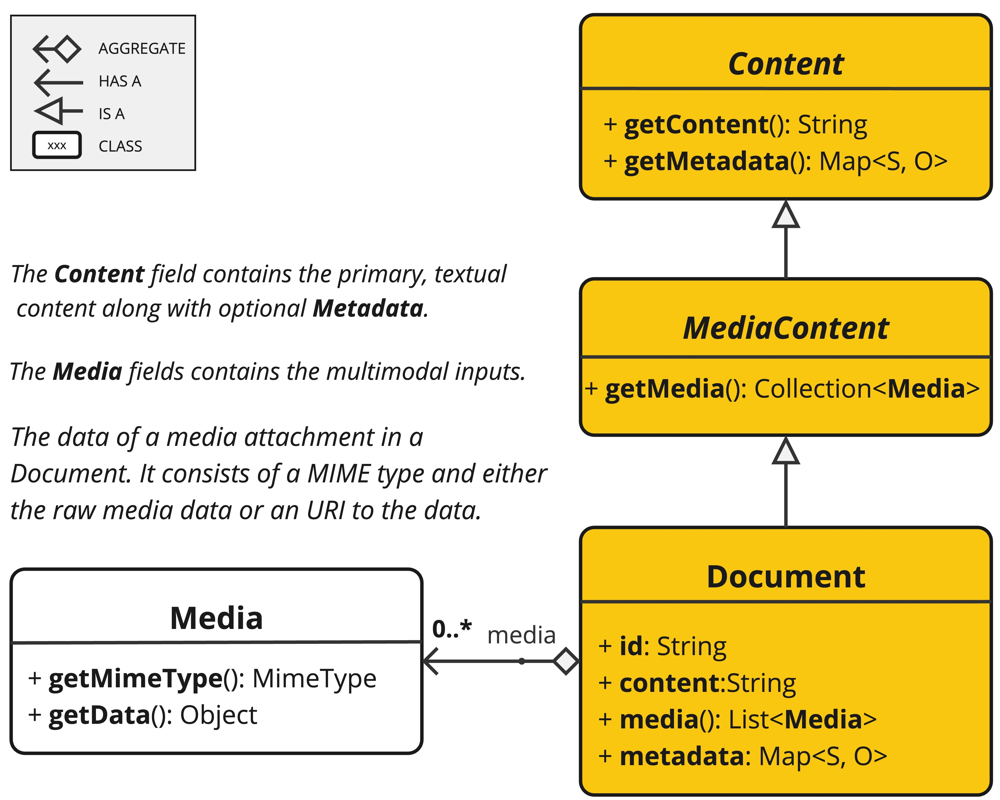
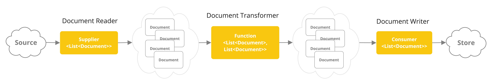

ETL Pipeline
The Extract, Transform, and Load (ETL) framework serves as the backbone of data processing within the Retrieval Augmented Generation (RAG) use case.
The ETL pipeline orchestrates the flow from raw data sources to a structured vector store, ensuring data is in the optimal format for retrieval by the AI model.
The RAG use case is text to augment the capabilities of generative models by retrieving relevant information from a body of data to enhance the quality and relevance of the generated output.
API Overview
The ETL pipelines creates, transforms and stores Document instances.

The Document class contains text, metadata and optionally additional media types like images, audio and video.
There are three main components of the ETL pipeline,
-
DocumentReaderthat implementsSupplier<List<Document>> -
DocumentTransformerthat implementsFunction<List<Document>, List<Document>> -
DocumentWriterthat implementsConsumer<List<Document>>
The Document class content is created from PDFs, text files and other document types with the help of DocumentReader.
To construct a simple ETL pipeline, you can chain together an instance of each type.

Let’s say we have the following instances of those three ETL types
-
PagePdfDocumentReaderan implementation ofDocumentReader -
TokenTextSplitteran implementation ofDocumentTransformer -
VectorStorean implementation ofDocumentWriter
To perform the basic loading of data into a Vector Database for use with the Retrieval Augmented Generation pattern, use the following code in Java function style syntax.
vectorStore.accept(tokenTextSplitter.apply(pdfReader.get()));Alternatively, you can use method names that are more naturally expressive for the domain
vectorStore.write(tokenTextSplitter.split(pdfReader.read()));ETL Interfaces
The ETL pipeline is composed of the following interfaces and implementations. Detailed ETL class diagram is shown in the ETL Class Diagram section.
DocumentReader
Provides a source of documents from diverse origins.
public interface DocumentReader extends Supplier<List<Document>> {
default List<Document> read() {
return get();
}
}DocumentTransformer
Transforms a batch of documents as part of the processing workflow.
public interface DocumentTransformer extends Function<List<Document>, List<Document>> {
default List<Document> transform(List<Document> transform) {
return apply(transform);
}
}DocumentReaders
|
Most |
JSON
The JsonReader processes JSON documents, converting them into a list of Document objects.
Example
@Component
class MyJsonReader {
private final Resource resource;
MyJsonReader(@Value("classpath:bikes.json") Resource resource) {
this.resource = resource;
}
List<Document> loadJsonAsDocuments() {
JsonReader jsonReader = new JsonReader(this.resource, "description", "content");
return jsonReader.get();
}
}Constructor Options
The JsonReader provides several constructor options:
-
JsonReader(Resource resource) -
JsonReader(Resource resource, String… jsonKeysToUse) -
JsonReader(Resource resource, JsonMetadataGenerator jsonMetadataGenerator, String… jsonKeysToUse)
Parameters
-
resource: A SpringResourceobject pointing to the JSON file. -
jsonKeysToUse: An array of keys from the JSON that should be used as the text content in the resultingDocumentobjects. -
jsonMetadataGenerator: An optionalJsonMetadataGeneratorto create metadata for eachDocument.
Behavior
The JsonReader processes JSON content as follows:
-
It can handle both JSON arrays and single JSON objects.
-
For each JSON object (either in an array or a single object):
-
It extracts the content based on the specified
jsonKeysToUse. -
If no keys are specified, it uses the entire JSON object as content.
-
It generates metadata using the provided
JsonMetadataGenerator(or an empty one if not provided). -
It creates a
Documentobject with the extracted content and metadata.
-
Using JSON Pointers
The JsonReader now supports retrieving specific parts of a JSON document using JSON Pointers. This feature allows you to easily extract nested data from complex JSON structures.
The get(String pointer) method
public List<Document> get(String pointer)This method allows you to use a JSON Pointer to retrieve a specific part of the JSON document.
Parameters
-
pointer: A JSON Pointer string (as defined in RFC 6901) to locate the desired element within the JSON structure.
Return Value
-
Returns a
List<Document>containing the documents parsed from the JSON element located by the pointer.
Behavior
-
The method uses the provided JSON Pointer to navigate to a specific location in the JSON structure.
-
If the pointer is valid and points to an existing element:
-
For a JSON object: it returns a list with a single Document.
-
For a JSON array: it returns a list of Documents, one for each element in the array.
-
-
If the pointer is invalid or points to a non-existent element, it throws an
IllegalArgumentException.
Example JSON Structure
[
{
"id": 1,
"brand": "Trek",
"description": "A high-performance mountain bike for trail riding."
},
{
"id": 2,
"brand": "Cannondale",
"description": "An aerodynamic road bike for racing enthusiasts."
}
]In this example, if the JsonReader is configured with "description" as the jsonKeysToUse, it will create Document objects where the content is the value of the "description" field for each bike in the array.
Notes
-
The
JsonReaderuses Jackson for JSON parsing. -
It can handle large JSON files efficiently by using streaming for arrays.
-
If multiple keys are specified in
jsonKeysToUse, the content will be a concatenation of the values for those keys. -
The reader is flexible and can be adapted to various JSON structures by customizing the
jsonKeysToUseandJsonMetadataGenerator.
Text
The TextReader processes plain text documents, converting them into a list of Document objects.
Example
@Component
class MyTextReader {
private final Resource resource;
MyTextReader(@Value("classpath:text-source.txt") Resource resource) {
this.resource = resource;
}
List<Document> loadText() {
TextReader textReader = new TextReader(this.resource);
textReader.getCustomMetadata().put("filename", "text-source.txt");
return textReader.read();
}
}Constructor Options
The TextReader provides two constructor options:
-
TextReader(String resourceUrl) -
TextReader(Resource resource)
Parameters
-
resourceUrl: A string representing the URL of the resource to be read. -
resource: A SpringResourceobject pointing to the text file.
Configuration
-
setCharset(Charset charset): Sets the character set used for reading the text file. Default is UTF-8. -
getCustomMetadata(): Returns a mutable map where you can add custom metadata for the documents.
Behavior
The TextReader processes text content as follows:
-
It reads the entire content of the text file into a single
Documentobject. -
The content of the file becomes the content of the
Document. -
Metadata is automatically added to the
Document:-
charset: The character set used to read the file (default: "UTF-8"). -
source: The filename of the source text file.
-
-
Any custom metadata added via
getCustomMetadata()is included in theDocument.
Notes
-
The
TextReaderreads the entire file content into memory, so it may not be suitable for very large files. -
If you need to split the text into smaller chunks, you can use a text splitter like
TokenTextSplitterafter reading the document:
List<Document> documents = textReader.get();
List<Document> splitDocuments = TokenTextSplitter.builder().build().apply(this.documents);-
The reader uses Spring’s
Resourceabstraction, allowing it to read from various sources (classpath, file system, URL, etc.). -
Custom metadata can be added to all documents created by the reader using the
getCustomMetadata()method.
HTML (JSoup)
The JsoupDocumentReader processes HTML documents, converting them into a list of Document objects using the JSoup library.
Dependencies
Add the dependency to your project using Maven or Gradle.
-
Maven
-
Gradle
<dependency>
<groupId>org.springframework.ai</groupId>
<artifactId>spring-ai-jsoup-document-reader</artifactId>
</dependency>dependencies {
implementation 'org.springframework.ai:spring-ai-jsoup-document-reader'
}Example
@Component
class MyHtmlReader {
private final Resource resource;
MyHtmlReader(@Value("classpath:/my-page.html") Resource resource) {
this.resource = resource;
}
List<Document> loadHtml() {
JsoupDocumentReaderConfig config = JsoupDocumentReaderConfig.builder()
.selector("article p") // Extract paragraphs within <article> tags
.charset("ISO-8859-1") // Use ISO-8859-1 encoding
.includeLinkUrls(true) // Include link URLs in metadata
.metadataTags(List.of("author", "date")) // Extract author and date meta tags
.additionalMetadata("source", "my-page.html") // Add custom metadata
.build();
JsoupDocumentReader reader = new JsoupDocumentReader(this.resource, config);
return reader.get();
}
}The JsoupDocumentReaderConfig allows you to customize the behavior of the JsoupDocumentReader:
-
charset: Specifies the character encoding of the HTML document (defaults to "UTF-8"). -
selector: A JSoup CSS selector to specify which elements to extract text from (defaults to "body"). -
separator: The string used to join text from multiple selected elements (defaults to "\n"). -
allElements: Iftrue, extracts all text from the<body>element, ignoring theselector(defaults tofalse). -
groupByElement: Iftrue, creates a separateDocumentfor each element matched by theselector(defaults tofalse). -
includeLinkUrls: Iftrue, extracts absolute link URLs and adds them to the metadata (defaults tofalse). -
metadataTags: A list of<meta>tag names to extract content from (defaults to["description", "keywords"]). -
additionalMetadata: Allows you to add custom metadata to all createdDocumentobjects.
Sample Document: my-page.html
<!DOCTYPE html>
<html lang="en">
<head>
<meta charset="UTF-8">
<title>My Web Page</title>
<meta name="description" content="A sample web page for Spring AI">
<meta name="keywords" content="spring, ai, html, example">
<meta name="author" content="John Doe">
<meta name="date" content="2024-01-15">
<link rel="stylesheet" href="style.css">
</head>
<body>
<header>
<h1>Welcome to My Page</h1>
</header>
<nav>
<ul>
<li><a href="/">Home</a></li>
<li><a href="/about">About</a></li>
</ul>
</nav>
<article>
<h2>Main Content</h2>
<p>This is the main content of my web page.</p>
<p>It contains multiple paragraphs.</p>
<a href="https://www.example.com">External Link</a>
</article>
<footer>
<p>© 2024 John Doe</p>
</footer>
</body>
</html>Behavior:
The JsoupDocumentReader processes the HTML content and creates Document objects based on the configuration:
-
The
selectordetermines which elements are used for text extraction. -
If
allElementsistrue, all text within the<body>is extracted into a singleDocument. -
If
groupByElementistrue, each element matching theselectorcreates a separateDocument. -
If neither
allElementsnorgroupByElementistrue, text from all elements matching theselectoris joined using theseparator. -
The document title, content from specified
<meta>tags, and (optionally) link URLs are added to theDocumentmetadata. -
The base URI, for resolving relative links, will be extracted from URL resources.
The reader preserves the text content of the selected elements, but removes any HTML tags within them.
Markdown
The MarkdownDocumentReader processes Markdown documents, converting them into a list of Document objects.
Dependencies
Add the dependency to your project using Maven or Gradle.
-
Maven
-
Gradle
<dependency>
<groupId>org.springframework.ai</groupId>
<artifactId>spring-ai-markdown-document-reader</artifactId>
</dependency>dependencies {
implementation 'org.springframework.ai:spring-ai-markdown-document-reader'
}Example
@Component
class MyMarkdownReader {
private final Resource resource;
MyMarkdownReader(@Value("classpath:code.md") Resource resource) {
this.resource = resource;
}
List<Document> loadMarkdown() {
MarkdownDocumentReaderConfig config = MarkdownDocumentReaderConfig.builder()
.withHorizontalRuleCreateDocument(true)
.withIncludeCodeBlock(false)
.withIncludeBlockquote(false)
.withAdditionalMetadata("filename", "code.md")
.build();
MarkdownDocumentReader reader = new MarkdownDocumentReader(this.resource, config);
return reader.get();
}
}The MarkdownDocumentReaderConfig allows you to customize the behavior of the MarkdownDocumentReader:
-
horizontalRuleCreateDocument: When set totrue, horizontal rules in the Markdown will create newDocumentobjects. -
includeCodeBlock: When set totrue, code blocks will be included in the sameDocumentas the surrounding text. Whenfalse, code blocks create separateDocumentobjects. -
includeBlockquote: When set totrue, blockquotes will be included in the sameDocumentas the surrounding text. Whenfalse, blockquotes create separateDocumentobjects. -
additionalMetadata: Allows you to add custom metadata to all createdDocumentobjects.
Sample Document: code.md
This is a Java sample application:
```java
package com.example.demo;
import org.springframework.boot.SpringApplication;
import org.springframework.boot.autoconfigure.SpringBootApplication;
@SpringBootApplication
public class DemoApplication {
public static void main(String[] args) {
SpringApplication.run(DemoApplication.class, args);
}
}
```
Markdown also provides the possibility to `use inline code formatting throughout` the entire sentence.
---
Another possibility is to set block code without specific highlighting:
```
./mvnw spring-javaformat:apply
```Behavior: The MarkdownDocumentReader processes the Markdown content and creates Document objects based on the configuration:
-
Headers become metadata in the Document objects.
-
Paragraphs become the content of Document objects.
-
Code blocks can be separated into their own Document objects or included with surrounding text.
-
Blockquotes can be separated into their own Document objects or included with surrounding text.
-
Horizontal rules can be used to split the content into separate Document objects.
The reader preserves formatting like inline code, lists, and text styling within the content of the Document objects.
PDF Page
The PagePdfDocumentReader uses Apache PdfBox library to parse PDF documents.
Dependencies
Add the dependency to your project using Maven or Gradle.
-
Maven
-
Gradle
<dependency>
<groupId>org.springframework.ai</groupId>
<artifactId>spring-ai-pdf-document-reader</artifactId>
</dependency>dependencies {
implementation 'org.springframework.ai:spring-ai-pdf-document-reader'
}Example
@Component
public class MyPagePdfDocumentReader {
List<Document> getDocsFromPdf() {
PagePdfDocumentReader pdfReader = new PagePdfDocumentReader("classpath:/sample1.pdf",
PdfDocumentReaderConfig.builder()
.withPageTopMargin(0)
.withPageExtractedTextFormatter(ExtractedTextFormatter.builder()
.withNumberOfTopTextLinesToDelete(0)
.build())
.withPagesPerDocument(1)
.build());
return pdfReader.read();
}
}PDF Paragraph
The ParagraphPdfDocumentReader uses the PDF catalog (e.g. TOC) information to split the input PDF into text paragraphs and output a single Document per paragraph.
NOTE: Not all PDF documents contain the PDF catalog.
Dependencies
Add the dependency to your project using Maven or Gradle.
-
Maven
-
Gradle
<dependency>
<groupId>org.springframework.ai</groupId>
<artifactId>spring-ai-pdf-document-reader</artifactId>
</dependency>dependencies {
implementation 'org.springframework.ai:spring-ai-pdf-document-reader'
}Example
@Component
public class MyPagePdfDocumentReader {
List<Document> getDocsFromPdfWithCatalog() {
ParagraphPdfDocumentReader pdfReader = new ParagraphPdfDocumentReader("classpath:/sample1.pdf",
PdfDocumentReaderConfig.builder()
.withPageTopMargin(0)
.withPageExtractedTextFormatter(ExtractedTextFormatter.builder()
.withNumberOfTopTextLinesToDelete(0)
.build())
.withPagesPerDocument(1)
.build());
return pdfReader.read();
}
}Tika (DOCX, PPTX, HTML…)
The TikaDocumentReader uses Apache Tika to extract text from a variety of document formats, such as PDF, DOC/DOCX, PPT/PPTX, and HTML. For a comprehensive list of supported formats, refer to the Tika documentation.
Dependencies
Add the dependency to your project using Maven or Gradle.
-
Maven
-
Gradle
<dependency>
<groupId>org.springframework.ai</groupId>
<artifactId>spring-ai-tika-document-reader</artifactId>
</dependency>dependencies {
implementation 'org.springframework.ai:spring-ai-tika-document-reader'
}Example
@Component
class MyTikaDocumentReader {
private final Resource resource;
MyTikaDocumentReader(@Value("classpath:/word-sample.docx")
Resource resource) {
this.resource = resource;
}
List<Document> loadText() {
TikaDocumentReader tikaDocumentReader = new TikaDocumentReader(this.resource);
return tikaDocumentReader.read();
}
}Transformers
TextSplitter
The TextSplitter an abstract base class that helps divides documents to fit the AI model’s context window.
TokenTextSplitter
The TokenTextSplitter is an implementation of TextSplitter that splits text into chunks based on token count. It supports configurable encoding types (e.g., CL100K_BASE, P50K_BASE, O200K_BASE) and defaults to CL100K_BASE.
Usage
Basic Usage
@Component
class MyTokenTextSplitter {
public List<Document> splitDocuments(List<Document> documents) {
TokenTextSplitter splitter = TokenTextSplitter.builder().build();
return splitter.apply(documents);
}
public List<Document> splitCustomized(List<Document> documents) {
TokenTextSplitter splitter = TokenTextSplitter.builder()
.withChunkSize(1000)
.withMinChunkSizeChars(400)
.withMinChunkLengthToEmbed(10)
.withMaxNumChunks(5000)
.withKeepSeparator(true)
.build();
return splitter.apply(documents);
}
}Custom Encoding Type
You can configure the encoding type used for tokenization. This is useful when working with models that use different tokenizers:
TokenTextSplitter splitter = TokenTextSplitter.builder()
.withEncodingType(EncodingType.O200K_BASE)
.withChunkSize(1000)
.build();Custom Punctuation Marks
You can customize the punctuation marks used for splitting text into semantically meaningful chunks. This is particularly useful for internationalization:
@Component
class MyInternationalTextSplitter {
public List<Document> splitChineseText(List<Document> documents) {
// Use Chinese punctuation marks
TokenTextSplitter splitter = TokenTextSplitter.builder()
.withChunkSize(800)
.withMinChunkSizeChars(350)
.withPunctuationMarks(List.of('。', '？', '！', '；')) // Chinese punctuation
.build();
return splitter.apply(documents);
}
public List<Document> splitWithCustomMarks(List<Document> documents) {
// Mix of English and other punctuation marks
TokenTextSplitter splitter = TokenTextSplitter.builder()
.withChunkSize(800)
.withPunctuationMarks(List.of('.', '?', '!', '\n', ';', ':', '。'))
.build();
return splitter.apply(documents);
}
}Configuration
Use TokenTextSplitter.builder() to create instances. All constructors are deprecated in favor of the builder.
Parameters
-
encodingType: The tokenizer encoding type to use (default:CL100K_BASE). Supported values includeCL100K_BASE,P50K_BASE, andO200K_BASE. -
chunkSize: The target size of each text chunk in tokens (default: 800). -
minChunkSizeChars: The minimum size of each text chunk in characters (default: 350). -
minChunkLengthToEmbed: The minimum length of a chunk to be included (default: 5). -
maxNumChunks: The maximum number of chunks to generate from a text (default: 10000). -
keepSeparator: Whether to keep separators (like newlines) in the chunks (default: true). -
punctuationMarks: List of characters to use as sentence boundaries for splitting (default:.,?,!,\n).
Behavior
The TokenTextSplitter processes text content as follows:
-
It encodes the input text into tokens using the CL100K_BASE encoding.
-
It splits the encoded text into chunks based on the
chunkSize. -
For each chunk:
-
It decodes the chunk back into text.
-
Only if the total token count exceeds the chunk size, it attempts to find a suitable break point (using the configured
punctuationMarks) after theminChunkSizeChars. -
If a break point is found, it truncates the chunk at that point.
-
It trims the chunk and optionally removes newline characters based on the
keepSeparatorsetting. -
If the resulting chunk is longer than
minChunkLengthToEmbed, it’s added to the output.
-
-
This process continues until all tokens are processed or
maxNumChunksis reached. -
Any remaining text is added as a final chunk if it’s longer than
minChunkLengthToEmbed.
| Punctuation-based splitting only applies when the token count exceeds the chunk size. Text that exactly matches or is smaller than the chunk size is returned as a single chunk without punctuation-based truncation. This prevents unnecessary splitting of small texts. |
Example
Document doc1 = new Document("This is a long piece of text that needs to be split into smaller chunks for processing.",
Map.of("source", "example.txt"));
Document doc2 = new Document("Another document with content that will be split based on token count.",
Map.of("source", "example2.txt"));
TokenTextSplitter splitter = TokenTextSplitter.builder().build();
List<Document> splitDocuments = splitter.apply(List.of(doc1, doc2));
for (Document doc : splitDocuments) {
System.out.println("Chunk: " + doc.getContent());
System.out.println("Metadata: " + doc.getMetadata());
}Notes
-
The
TokenTextSplitteruses the CL100K_BASE encoding from thejtokkitlibrary, which is compatible with newer OpenAI models. -
The splitter attempts to create semantically meaningful chunks by breaking at sentence boundaries where possible.
-
Metadata from the original documents is preserved and copied to all chunks derived from that document.
-
The content formatter (if set) from the original document is also copied to the derived chunks if
copyContentFormatteris set totrue(default behavior). -
This splitter is particularly useful for preparing text for large language models that have token limits, ensuring that each chunk is within the model’s processing capacity.
-
Custom Punctuation Marks: The default punctuation marks (
.,?,!,\n) work well for English text. For other languages or specialized content, customize the punctuation marks using the builder’swithPunctuationMarks()method. -
Performance Consideration: While the splitter can handle any number of punctuation marks, it’s recommended to keep the list reasonably small (under 20 characters) for optimal performance, as each mark is checked for every chunk.
-
Extensibility: The
getLastPunctuationIndex(String)method isprotected, allowing subclasses to override the punctuation detection logic for specialized use cases. -
Small Text Handling: As of version 2.0, small texts (with token count at or below the chunk size) are no longer split at punctuation marks, preventing unnecessary fragmentation of content that already fits within the size limits.
KeywordMetadataEnricher
The KeywordMetadataEnricher is a DocumentTransformer that uses a generative AI model to extract keywords from document content and add them as metadata.
Usage
@Component
class MyKeywordEnricher {
private final ChatModel chatModel;
MyKeywordEnricher(ChatModel chatModel) {
this.chatModel = chatModel;
}
List<Document> enrichDocuments(List<Document> documents) {
KeywordMetadataEnricher enricher = KeywordMetadataEnricher.builder(chatModel)
.keywordCount(5)
.build();
// Or use custom templates
KeywordMetadataEnricher enricher = KeywordMetadataEnricher.builder(chatModel)
.keywordsTemplate(YOUR_CUSTOM_TEMPLATE)
.build();
return enricher.apply(documents);
}
}Constructor Options
The KeywordMetadataEnricher provides two constructor options:
-
KeywordMetadataEnricher(ChatModel chatModel, int keywordCount): To use the default template and extract a specified number of keywords. -
KeywordMetadataEnricher(ChatModel chatModel, PromptTemplate keywordsTemplate): To use a custom template for keyword extraction.
Behavior
The KeywordMetadataEnricher processes documents as follows:
-
For each input document, it creates a prompt using the document’s content.
-
It sends this prompt to the provided
ChatModelto generate keywords. -
The generated keywords are added to the document’s metadata under the key "excerpt_keywords".
-
The enriched documents are returned.
Customization
You can use the default template or customize the template through the keywordsTemplate parameter. The default template is:
\{context_str}. Give %s unique keywords for this document. Format as comma separated. Keywords:Where {context_str} is replaced with the document content, and %s is replaced with the specified keyword count.
Example
ChatModel chatModel = // initialize your chat model
KeywordMetadataEnricher enricher = KeywordMetadataEnricher.builder(chatModel)
.keywordCount(5)
.build();
// Or use custom templates
KeywordMetadataEnricher enricher = KeywordMetadataEnricher.builder(chatModel)
.keywordsTemplate(new PromptTemplate("Extract 5 important keywords from the following text and separate them with commas:\n{context_str}"))
.build();
Document doc = new Document("This is a document about artificial intelligence and its applications in modern technology.");
List<Document> enrichedDocs = enricher.apply(List.of(this.doc));
Document enrichedDoc = this.enrichedDocs.get(0);
String keywords = (String) this.enrichedDoc.getMetadata().get("excerpt_keywords");
System.out.println("Extracted keywords: " + keywords);Notes
-
The
KeywordMetadataEnricherrequires a functioningChatModelto generate keywords. -
The keyword count must be 1 or greater.
-
The enricher adds the "excerpt_keywords" metadata field to each processed document.
-
The generated keywords are returned as a comma-separated string.
-
This enricher is particularly useful for improving document searchability and for generating tags or categories for documents.
-
In the Builder pattern, if the
keywordsTemplateparameter is set, thekeywordCountparameter will be ignored.
SummaryMetadataEnricher
The SummaryMetadataEnricher is a DocumentTransformer that uses a generative AI model to create summaries for documents and add them as metadata. It can generate summaries for the current document, as well as adjacent documents (previous and next).
Usage
@Configuration
class EnricherConfig {
@Bean
public SummaryMetadataEnricher summaryMetadata(OpenAiChatModel aiClient) {
return new SummaryMetadataEnricher(aiClient,
List.of(SummaryType.PREVIOUS, SummaryType.CURRENT, SummaryType.NEXT));
}
}
@Component
class MySummaryEnricher {
private final SummaryMetadataEnricher enricher;
MySummaryEnricher(SummaryMetadataEnricher enricher) {
this.enricher = enricher;
}
List<Document> enrichDocuments(List<Document> documents) {
return this.enricher.apply(documents);
}
}Constructor
The SummaryMetadataEnricher provides two constructors:
-
SummaryMetadataEnricher(ChatModel chatModel, List<SummaryType> summaryTypes) -
SummaryMetadataEnricher(ChatModel chatModel, List<SummaryType> summaryTypes, String summaryTemplate, MetadataMode metadataMode)
Parameters
-
chatModel: The AI model used for generating summaries. -
summaryTypes: A list ofSummaryTypeenum values indicating which summaries to generate (PREVIOUS, CURRENT, NEXT). -
summaryTemplate: A custom template for summary generation (optional). -
metadataMode: Specifies how to handle document metadata when generating summaries (optional).
Behavior
The SummaryMetadataEnricher processes documents as follows:
-
For each input document, it creates a prompt using the document’s content and the specified summary template.
-
It sends this prompt to the provided
ChatModelto generate a summary. -
Depending on the specified
summaryTypes, it adds the following metadata to each document:-
section_summary: Summary of the current document. -
prev_section_summary: Summary of the previous document (if available and requested). -
next_section_summary: Summary of the next document (if available and requested).
-
-
The enriched documents are returned.
Customization
The summary generation prompt can be customized by providing a custom summaryTemplate. The default template is:
"""
Here is the content of the section:
{context_str}
Summarize the key topics and entities of the section.
Summary:
"""Example
ChatModel chatModel = // initialize your chat model
SummaryMetadataEnricher enricher = new SummaryMetadataEnricher(chatModel,
List.of(SummaryType.PREVIOUS, SummaryType.CURRENT, SummaryType.NEXT));
Document doc1 = new Document("Content of document 1");
Document doc2 = new Document("Content of document 2");
List<Document> enrichedDocs = enricher.apply(List.of(this.doc1, this.doc2));
// Check the metadata of the enriched documents
for (Document doc : enrichedDocs) {
System.out.println("Current summary: " + doc.getMetadata().get("section_summary"));
System.out.println("Previous summary: " + doc.getMetadata().get("prev_section_summary"));
System.out.println("Next summary: " + doc.getMetadata().get("next_section_summary"));
}The provided example demonstrates the expected behavior:
-
For a list of two documents, both documents receive a
section_summary. -
The first document receives a
next_section_summarybut noprev_section_summary. -
The second document receives a
prev_section_summarybut nonext_section_summary. -
The
section_summaryof the first document matches theprev_section_summaryof the second document. -
The
next_section_summaryof the first document matches thesection_summaryof the second document.
Notes
-
The
SummaryMetadataEnricherrequires a functioningChatModelto generate summaries. -
The enricher can handle document lists of any size, properly handling edge cases for the first and last documents.
-
This enricher is particularly useful for creating context-aware summaries, allowing for better understanding of document relationships in a sequence.
-
The
MetadataModeparameter allows control over how existing metadata is incorporated into the summary generation process.
Writers
File
The FileDocumentWriter is a DocumentWriter implementation that writes the content of a list of Document objects into a file.
Usage
@Component
class MyDocumentWriter {
public void writeDocuments(List<Document> documents) {
FileDocumentWriter writer = new FileDocumentWriter("output.txt", true, MetadataMode.ALL, false);
writer.accept(documents);
}
}Constructors
The FileDocumentWriter provides three constructors:
-
FileDocumentWriter(String fileName) -
FileDocumentWriter(String fileName, boolean withDocumentMarkers) -
FileDocumentWriter(String fileName, boolean withDocumentMarkers, MetadataMode metadataMode, boolean append)
Parameters
-
fileName: The name of the file to write the documents to. -
withDocumentMarkers: Whether to include document markers in the output (default: false). -
metadataMode: Specifies what document content to be written to the file (default: MetadataMode.NONE). -
append: If true, data will be written to the end of the file rather than the beginning (default: false).
Behavior
The FileDocumentWriter processes documents as follows:
-
It opens a FileWriter for the specified file name.
-
For each document in the input list:
-
If
withDocumentMarkersis true, it writes a document marker including the document index and page numbers. -
It writes the formatted content of the document based on the specified
metadataMode.
-
-
The file is closed after all documents have been written.
Document Markers
When withDocumentMarkers is set to true, the writer includes markers for each document in the following format:
### Doc: [index], pages:[start_page_number,end_page_number]Metadata Handling
The writer uses two specific metadata keys:
-
page_number: Represents the starting page number of the document. -
end_page_number: Represents the ending page number of the document.
These are used when writing document markers.
Example
List<Document> documents = // initialize your documents
FileDocumentWriter writer = new FileDocumentWriter("output.txt", true, MetadataMode.ALL, true);
writer.accept(documents);This will write all documents to "output.txt", including document markers, using all available metadata, and appending to the file if it already exists.
Notes
-
The writer uses
FileWriter, so it writes text files with the default character encoding of the operating system. -
If an error occurs during writing, a
RuntimeExceptionis thrown with the original exception as its cause. -
The
metadataModeparameter allows control over how existing metadata is incorporated into the written content. -
This writer is particularly useful for debugging or creating human-readable outputs of document collections.
VectorStore
Provides integration with various vector stores. See Vector DB Documentation for a full listing.